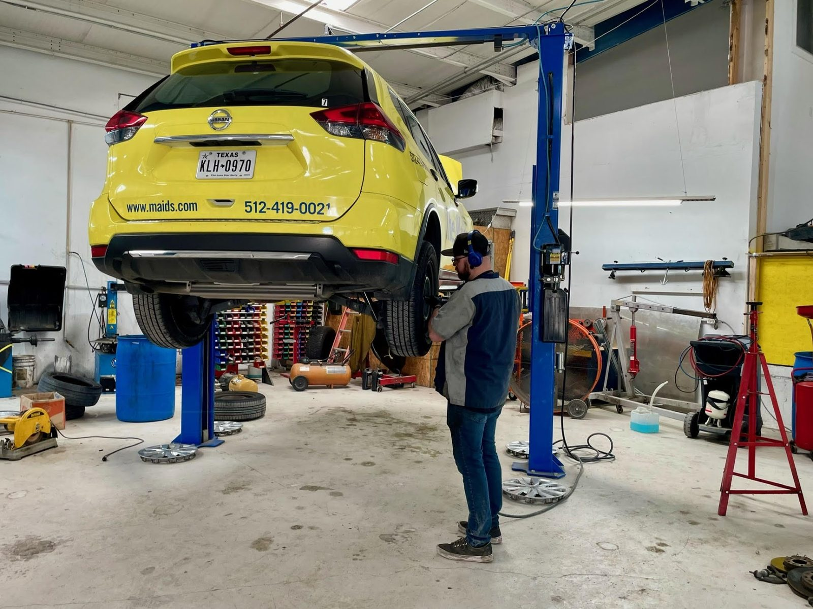

Diagnostics and maintenance
Finding the real fault before the fix, plus scheduled service without unneeded extras.
- Diagnostics
- Scheduled maintenance
- Fluid service
Auto, diesel & body shop · Austin, TX
We find the problem, explain the fix and handle the repair, from A/C to body work.

Our work
Diagnostics, maintenance, diesel and A/C repair, and a body shop that works with insurance.
Finding the real fault before the fix, plus scheduled service without unneeded extras.
A/C repair that leaves the system cold, and diesel work from a shop with Diesel in its name.
Bumpers restored, damaged trucks made right, and we talk to your insurance company.
What customers wrote
Can’t say enough about this team. I had an issue with a car I just bought from a dealership and the dealership was no help at being able to diagnose the issue. Genuine was the first shop I talked to that cared enough to actually diagnose the problem, replicate it and help me figure out the best solution. They got my car in and out in a week and I’m so happy it is fixed!
Genuine Automotive & Diesel helped with my company‘s truck repairs after another driver sideswiped us. Truck looks like it never happened. Abbie was excellent at communication with the insurance company and with us. Highly recommend.
We originally took my great-grandmother’s car to a different shop that fixed some other issues, but the A/C was still a problem. We decided to bring it to Genuine Automotive, and I’m so glad we did! Not only did they fix the A/C, which is now freezing cold and perfect timing as we approach summer, but their body shop also helped restore the bumper, leaving the car looking pretty much new again.
Needed 100 kmi service done, and the time it took to get an appointment til getting car out was better than any I could find (except the dealers). They didn't do the flushes that were unnecessary, which was honest of them, and the price was good, certainly less than at the dealers. Despite the driving distance, they were very worth it!

About us
Auto repair, diesel and body work under one roof.
A front desk that listens, techs who diagnose and fix, and help with your insurance company.
Finished jobs


Bldg 2, Suite A. Ask about complimentary loaner cars when you book.